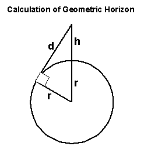
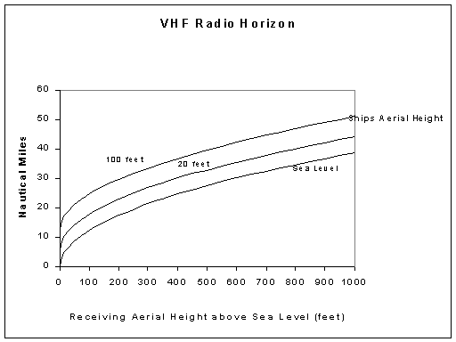
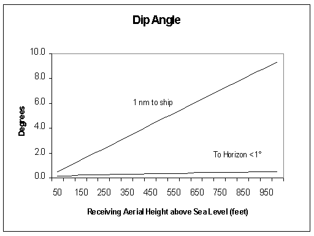
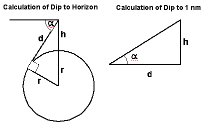
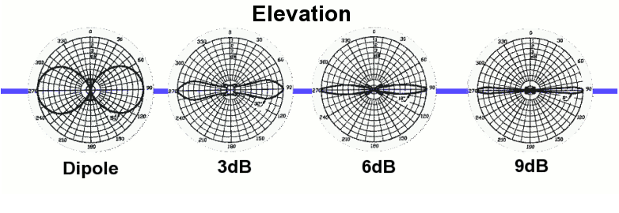

Radio Horizon

h=Height of aerial above sea level
r=Radius of the earth (3440 Nautical miles)
d=Distance to Horizon
Using Pythagoras d²=(r+h)²-r²
hence d=√((r+h)²-r²)
Radio Horizon
To calculate the Radio Horizon because of refraction we
achieve this by pretending the Earth has a larger radius which we
call
the equivalent Earth radius R
e which is normally
4/3r in the UK (4587 NM).
There are 6076 feet in a Nautical Mile
dr=√((4587+h/6076)²-4587²)
The radio horizon between the transmitter and receiver is the
addition
of the horizon of both masts.

Note the size of the ship makes a considerable difference to the
range.
Reception beyond this range is caused by
propagation
conditions and will be flukey.
Dip
This was checked to see if a ship could actually be below the
aerial
horizon.
The graph shows the angle down to a ship for different receiving
aerial
heights. For a ship 1nm from the aerial and the aerial 1000 feet
above
sea level the angle down would be 10°. From the same aerial
the
horizon would be under 1°.


α=Dip angle
To Horizon sin(90-α)=r/(r+h)
To 1 nm tan α=h/d
This significance is high gain collinear aerials increase
horizontal
gain at the expense
of vertical beam width. The graph shows this could be relevant
with a
high gain aerial close to and much higher than
the ship's aerial ie the ship is "below the radar"

For example the
Cushcraft
Ringo
Ranger specification quotes 7dBi gain and a beam width
of 7 degrees. The dipole "donut" becomes a "biscuit" !
For more technical info see the references on my
aerial
page
See
also
Beyond
the Horizon Propagation &
Tropospheric
Ducting Forecast